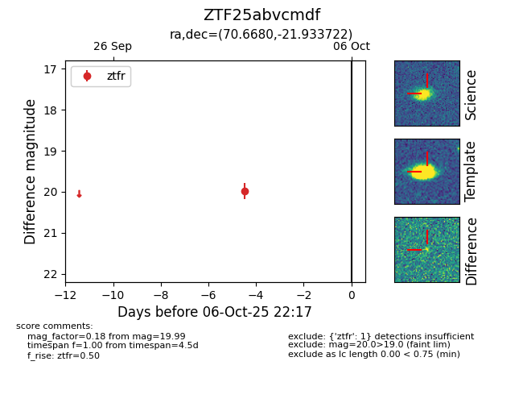

FINK: ZTF25abvcmdf
Lasair: ZTF25abvcmdf
ALeRCE: ZTF25abvcmdf
ZTF25abvcmdf (ztf,fink)
equatorial (ra, dec) = (70.6680,-21.93372)
galactic (l, b) = (220.7007,-37.60016)

last ztfr=19.99
1 ztfr detections